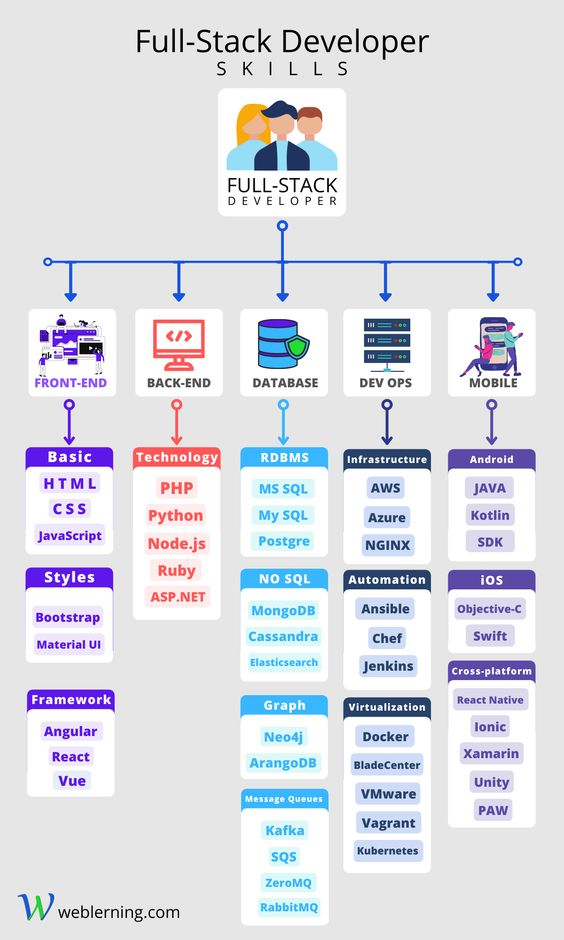

Repositório de Estudos
Flávia Souza
Aspirante a Web Developer | Acadêmica em Engenharia Elétrica

Prazer, me chamo Flávia Souza, sou natural de Salgueiro (Pernambuco), tenho 19 anos e essa é a página na qual eu adiciono e implemento meu aprendizado na área de Web Development, então continue me acompanhando para ver minha evolução na área!
